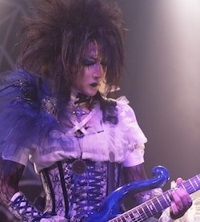

Musical Categories
Rock
Rock has its roots in a combination of musical styles such as blues, rhythm and blues, country and gospel, among others. Its distinctive characteristics include a sharp, strong beat, often with a four-beat rhythm, along with lyrics that often express themes related to rebellion, love, politics, freedom, and youth.
-
Kiss
1973-2023
-
Queen
1970-presente
-

The Gazette
2002-presente
-

Moi dix Mois
2002-presente
-
Nirvana
1987-1994
Pop
It is an eclectic genre, which borrows elements from other styles such as urban, dance, rock, Latin music, Rhythm and Blues or Folk.
-
Spice Girls
1994-2000
-
Mecano
1981-1992
-
Imagine Dragons
2010–Presente
-

stray kids
2017-presente
-
Malice Mizer
1992-2001
Electronic
Electronic music can be characterized as a musical genre that is created and produced using electronic and electromechanical instruments, various digital instruments or so-called circuit-based music technology.
-
Janji
2015
-

TheFatRat
2017
-
OMFG
2014
-
SKRILLEX
2012
-
Martin Garrix
2013
Clasica
Classical music is characterized by its diversity in musical forms, such as the symphony, the sonata, the concert, the opera, the string quartet, among others.
-
Edvard Grieg
-
Tchaikovsky
-
Beethoven
-
Mozart
-
Vivaldi